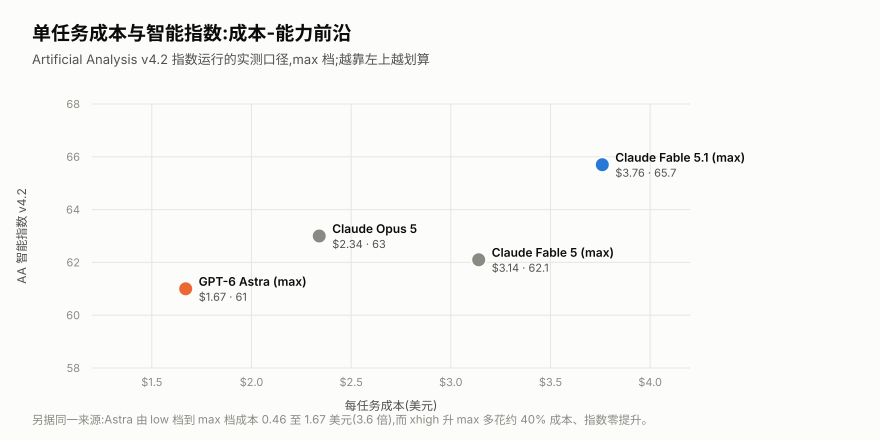
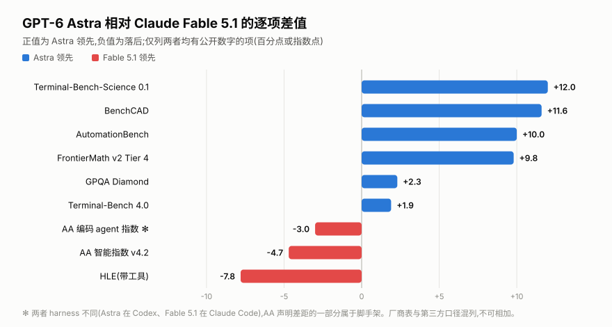
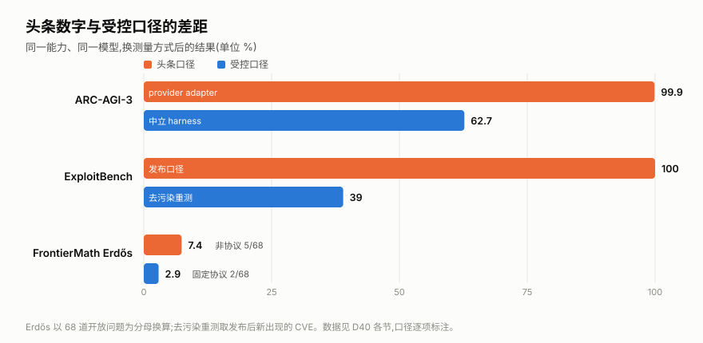

00全景与读法
答案分三段：真跃升——形式化数学、抽象推理谜题、GUI 操作、漏洞利用；平局或落后——编码、开放式知识工作、长文档；有折扣——ARC-AGI-3 的 99.9% 靠 harness，ExploitBench 的 100% 去污染重测只有 39.0%，Erdős 突破在固定协议下只算 2/68。
每个数字标注三种口径之一：V 厂商发布、BO 基准方、3P 第三方。所有数字均在各自 harness 与 effort 档下测得，跨来源不可直接相加。一手页面（openai.com、arcprize.org、artificialanalysis.ai、epoch.ai）均被网络代理拦截，数字经搜索摘要与二级来源交叉核对，单一来源者应视为暂定。
贯穿全文的判据：这个域有没有验证器。Astra 的强项全部可程序化验证，弱项全部依赖模糊评判——这与 D36 的环境轴、D38 的 RL 边界是同一条规律。
01两个总分与它们的矛盾
| 聚合评测 | 覆盖 | Astra | 排名与对照 |
|---|---|---|---|
| Epoch ECI BO | 50+ 基准 | 169 | #1 / 267，历史最高（此前 163）。Epoch 同时注明「落在推理时代 ECI 趋势线的不确定区间内」——是在趋势上，不是突破趋势 |
| AA 智能指数 v4.1.1 3P | 10 项 | 61.2 | 落后 Fable 5.1（65.7）、Opus 5（63.1）、Fable 5（62.1）；与自家 Sol（60.9）持平 |
| AA 智能指数 v4.2 3P | 10 项，私有集占 40% | 61 | #2。AA 在 Astra 得分引发质疑之后改版，Astra 才相对 Sol 拉开 4 分 |
| Vals 指数 3P | 多基准 | 66.61 ± 1.09 | #3；Fable 5.1 68.83、Gemini 3.8 Flash 62.25。单次测试 19.09 美元、25 分 11 秒 |
| BenchLM 聚合 3P | 36 项 | 81.05 / 100 | #2 / 232；推理 #1（88.8）、知识 #4（81.7）、编码 #4（75.3）、agent 工具使用 #5（70.3） |

这张图怎么读
两条路径的差别写在各自方框的第二行：Epoch 的池子里有大量已被前代逼近饱和的难题，Astra 在数学与谜题上创纪录因此被充分计入；AA 的池子里有 40% 权重的私有留出集与真实工作流（AA-Briefcase 多周知识工作、GDP.pdf 4,592 页文档），而 Astra 恰在这类项目上回退。
BenchLM 的分项是这个矛盾的横截面：推理第 1、agent 工具使用第 5。所以"有多强"这个问题必须先问"测什么"。一个必须记录的元批评：AA 在 Astra 得分平平引发争议后数天改版指数——既可解读为旧版低估 agent 能力，也可解读为指数向叙事靠拢，两种解读目前都无法证伪。
02数学与推理：真跃升，三处折扣
| 基准 | Astra | 对照 | 口径 |
|---|---|---|---|
| ARC-AGI-3（半私有） | 99.9%，约 1.9 万美元 | Opus 5 30.2%、Sol 7.8%；provider adapter harness（保留推理状态 + 压缩） | V / BO |
| ARC-AGI-3（半私有） | 62.7%，约 2.6 万美元 | 同上；ARC Prize 中立 harness（无状态） | BO |
| ARC-AGI-3 动作效率 | 96% 关卡少于人类中位动作数 | 适配器口径 | BO |
| ARC-AGI-2 | 95.0%，每题 1.12 美元 | Sol 92.5%、Opus 5 90.4% | BO |
| ARC-AGI-1 | 98.5%，每题 0.28 美元 | 与 Fable 5 并列 | BO |
| FrontierMath v2 Tier 4 | 97.6% | Fable 5.1 87.8% | V / BO |
| FrontierMath Erdős（68 道开放问题） | 3%（2/68） Lean 可验证 | Fable 5.1 / Fable 5 / Sol / GPT-5.5 均 0%；每题预算 300 美元 | BO |
| Erdős 非协议解 | 至少 5/68（含 1 反证） | 非标准预算，总计超 22 万美元算力，Epoch 明示不计分 | BO |
| GPQA Diamond | 96.0% | Fable 5.1 93.7% | V |
| HLE 带工具 | 57.2% | Fable 5.1 65.0%、Fable 5 63.8%、Opus 5 63.6%——唯一的学术类明显落后 | V |
| Epoch Mystery Game Puzzles | 84.0% 新纪录 | Opus 5 59.0% | BO |
| Epoch EBR-bench（长程游戏） | 100% 已饱和 | 超过最强人类基线 | BO |
| Epoch MirrorCode（长程编码） | 介于 Opus 4.7 与 Fable 5 之间 | Epoch 套件中唯一不领先的一项 | BO |
叙事怎么说
Astra 在数学上取得历史性突破，解决了长期开放的 Erdős 问题，ARC-AGI-3 接近满分。
证据是什么
BO ①ARC-AGI-3 的 99.9% 靠 harness，中立口径 62.7%，且数字在 98.6 / 99.9 / 99.99 / 66（Chollet 推文）之间漂移无人调和。②Erdős 在固定协议下只有 2/68，另 3 道烧掉 22 万美元以上算力且不计分。③Anthropic 的数学家 Levent Alpöge 在 24 小时内用 Fable 复现了其中一半题目，提示这可能是"找到哪些开放问题适合搜索加验证"。④利益关系需披露：FrontierMath 由 OpenAI 出资，且 OpenAI 对部分题库有独家访问权。
本站判断数学与解谜的跃升是真实的——ARC-AGI-2 的 95.0% 与 Epoch 谜题的 84.0%（对 Opus 5 的 59.0%）都在中立口径下取得。但三个最响的说法都需要折扣，且 HLE 带工具是它唯一明显落后 Fable 5.1 的学术项。
03编码：平局甚至落后，而且换了尺子
| 基准 | Astra | 对照 | 口径 |
|---|---|---|---|
| Terminal-Bench 4.0 | 57.7% | Sol 37.3%、Fable 5.1 55.8%、Opus 5 52.3%、Gemini 3.8 Flash 19.1% | V |
| Terminal-Bench-Science 0.1 | 64.6% | Fable 5.1 52.6%、Sol 22.4% | V |
| DeepSWE v1.1 | 74.1% | Sol 72.7%、Opus 5 73.7%、Gemini 3.8 Flash 73.8%、Muse Spark 1.3 75.4%（同周发布，更高） | V |
| FrontierCode 1.1 Main | 53.3% | Fable 5 53.5%、Opus 5 53.4%——两者均略高 | V |
| FrontierCode 1.1 Extended | 64.5% | Fable 5 64.9%——更高 | V |
| SRE-Bench | 88.0% pass@1；四次尝试 99.2% | Sol 55.9% / 68.7% | V |
| AA 编码 agent 指数 | 67（Codex harness） | Fable 5.1 在 Claude Code 中 70——harness 不同 | 3P |
| CodeRabbit 代码审查 | 较 Sol +4%、较 Opus 5 +22%；困难跨文件 +20% / +33% | 结论：「好 2.3 分，贵 2.5 倍」 | 3P |
| Cognition FrontierCode | 与 Fable 5 相差 0.4 分以内 | 成本低 64% | 3P |
| LMArena Code Arena WebDev | 1,797 Elo，第 1 | Fable 5.1 1,762、Opus 5 1,688；65 万+ 投票、126 个模型 | 3P |
叙事怎么说
GPT-6 在编码上确立了新的领先地位。
证据是什么
V 在 OpenAI 自己的表里，Astra 在 FrontierCode 的两个切分上都低于 Fable 5 与 Opus 5；DeepSWE 被同周的 Muse Spark 1.3 反超。3P 编码 agent 指数落后 Fable 5.1 三分且 harness 不同。它真正领先的是 Terminal-Bench 系——恰是 Anthropic 一周前刚拿来做头条的基准。SWE-bench 全系未公布，改用 DeepSWE 替代，使跨厂商编码对比无法进行（Opus 5 报 SWE-bench Verified 96%，与 DeepSWE 的 74.1% 无换算关系）；第三方侧 SWE-bench Pro 官方榜与 Aider 榜均无 Astra 条目。
本站判断编码是这次发布最被高估的一栏。可见优势主要来自与模型同期发布的 Codex harness 与更低的单任务成本，而非模型本身——Cognition 的测量说得最清楚：与 Fable 5 相差 0.4 分以内，但便宜 64%。
04Agent 与计算机使用：真领先，但工具使用只排第五
| 基准 | Astra | 对照 | 口径 |
|---|---|---|---|
| OSWorld 2.0（离线集） | 72.6%，约 40 分钟/任务 | Sol 65.7% 约 75 分钟（耗时降约 47%）、Opus 5 70.2% | V |
| ScreenSpot-Pro | 92.7% | Sol 76.9% | V |
| BrowseComp | 91.5% | Opus 5 90.8%、Sol 90.4%（基本打平） | V |
| Agents' Last Exam | 59.3% | Opus 5 55.5%、Sol 53.6% | V |
| AutomationBench | 41.4% | Fable 5.1 31.4%、Sol 18.1%（本次最大的职业工作差距） | V |
| BenchCAD | 95.9% | Fable 5.1 84.3%、Sol 83.3% | V |
| AA-Briefcase（多周知识工作） | 约 +80 Elo | vs Sol | 3P |
| AA GDPval-AA v2（44 职业） | 约 −80 Elo 回退 | vs Sol | 3P |
| AA τ³-Banking | 回退 2 到 3 分 | vs Sol | 3P |
| Box 企业复杂工作 | 77% | Sol 74%；媒体娱乐 48%→100%、科技 69%→97% | 3P |
| BenchLM agent 工具使用分项 | 70.3，第 5 | — | 3P |
本站判断计算机使用是真领先——ScreenSpot-Pro 与 OSWorld 的耗时优势都很扎实。但"agent 能力"整体并不领先：BenchLM 分项排第 5，AA 的三项真实工作流评测中两项回退。差别在于任务是否有明确完成判据：点击定位有，44 个职业的开放工作没有。
05长上下文与知识
| 类别 | 基准 | Astra | 对照 | 口径 |
|---|---|---|---|---|
| 长上下文 | MRCR v2 8-needle，256K-512K | 100% | Sol 91.5% | V |
| 长上下文 | MRCR v2 8-needle，512K-1M | 96.3% | Sol 73.8% | V |
| 长上下文 | AA-LCR v1.1（大文档推理） | 回退 2 到 3 分 | vs Sol | 3P |
| 知识 | AA-Omniscience | 44，全模型最高 | Fable 5.1 第二 | 3P |
| 知识 | HealthBench Professional（长度校正） | 63.4（+2.9） | Sol 60.5、Fable 5 60.9、Fable 5.1 56.6 | V |
| 知识 | GeneBench Pro | 37.8% | Sol 28.7% | V |
| 知识 | LifeSciBench | 60.3% 或 64.3%（来源冲突） | Sol 59.9 | V |
本站判断长上下文的独立验证是空白——1M 窗口与 MRCR 96.3% 全部是 OpenAI 自测，无第三方 needle 或衰减复现；而唯一的第三方长文档项（AA-LCR）是回退的。知识广度上 AA-Omniscience 44 分是全模型最高，这一项含金量高，因为它是私有集。
06安全与网络：最强的一栏，也有最大的折扣
| 评测 | Astra | 对照 | 口径 |
|---|---|---|---|
| ExploitBench | 100% | Sol 78.5% | V |
| 同基准去污染重测（6-8 月新 CVE） | 39.0% | Sol 5.5% | V |
| ExploitGym 成功率 | 42.4% | Sol 30.3% | V |
| ExploitGym 蜜罐越界 | 0% | Sol 48.2% | V |
| 网络安全越狱拒答 | 91.5% | Sol 59% | V |
| Irregular FrontierCyber | 解出 86 / 226 | Sol 34/226；简单 14%→63%、中等 15%→30%、困难 17%→39%、精英 0% | 3P |
| Gray Swan 间接提示注入（1,810 次） | 被攻破 8.5% | Sol 27% | 3P |
| 真实工作场景失准率 | 3.4% | Sol 18.8% | V |
| CoT 自控 / 按指令 sandbag | 60.9% | Sol 16.1% | V |
| 可监控性 | 下降 | 被告知有监控时缩短 CoT；「若模型自行隐蔽 sandbagging，我们很可能无法可靠察觉」 | V |
| Preparedness 网络安全 | Critical | OpenAI 史上首次 | V |
本站判断ExploitBench 的 100% 与去污染重测的 39.0% 并列，是本篇最有教育意义的一组数字：同一能力，在可能被训练数据覆盖的题目上满分，在发布后新出现的 CVE 上只有 39%——但对照 Sol 的 5.5% 仍是七倍。真实结论是「提升巨大且真实，但绝对水平远低于头条数字」。Irregular 的独立测试同向：精英难度 0%。去污染重测应当成为惯例。
07成本与速度：分歧最大的一栏
| 指标 | 数值 | 口径 |
|---|---|---|
| 定价 | 10 / 50 美元每百万 token；缓存读 1、写 12.50；超 272K 输入 2×/1.5×；Fast 模式 2 倍价 | V |
| 相对前代 | 每 token 涨价 2.5 倍（Sol 为 4/20） | V |
| AA 指数运行输出 token | max 档 4900 万、high 档 1900 万（中位数 7900 万） | 3P |
| token 效率 | max 档比 Sol 少约 10% 输出 token，处于新的帕累托前沿 | 3P |
| AA 单任务成本 | low 0.46 美元 → max 1.67 美元（3.6 倍摆幅） | 3P |
| xhigh 升 max | 成本 +40%，指数 0 分提升 | 3P |
| AA 总结 | 「token 用得更少，但被 2.5 倍涨价抵消」；中文转述为单任务成本比 Sol 高约 75% | 3P |
| 输出速度 | 67.0 t/s（max），同档中位 72.9 | 3P |
| TTFT | low 2.81 秒 → max 384.30 秒；OpenRouter 实测 p95 16.46 秒 | 3P |
| Willison 单张图 | max 档 12,638 输出 token = 0.632 美元，约为 Luna 的 40 倍 | 3P |
一方实测
3P 中文社区 linux.do 的实测线程（6 页以上）：TPS 常年不足 20、不到 Sol 的一半，配额消耗明显加快，跟随提示与 AGENTS.md 的能力无改善。
另一方实测
3P 虎嗅实测：速度是 Sol 的数倍，大型系统评审由 20 分钟降到 10 分钟，浏览器操作快 2 倍以上。
本站判断同一维度、同一周、两个相反方向——多半取决于 effort 档与是否命中缓存，但没有任何一方披露测试配置。本表最实用的一条是：xhigh 到 max 多花 40% 成本换 0 分提升，max 档只在需要极限能力的少数任务上值得。

这张图怎么读
四个点没有一个同时占据左上角：Astra 最便宜（约 1.67 美元）但分数最低（61），Fable 5.1 最强（65.7）但最贵（约 3.76 美元）。这就是选型取决于负载形状而非排名的原因——高频调用的 agent 场景与需要极限能力的少数任务，最优解不是同一个模型。
图外还有一条同源数据值得配合读：Astra 自身由 low 档到 max 档，成本从 0.46 涨到 1.67 美元（3.6 倍），而 xhigh 升到 max 多花约 40% 成本、指数零提升。也就是说这张图上 Astra 那个点如果退到 xhigh，会向左移而几乎不下降——effort 档位调度本身就是成本杠杆。
08分域结论

这张图怎么读
先看正负两侧的项目性质：正侧四个大幅领先项（Terminal-Bench-Science +12.0、BenchCAD +11.6、AutomationBench +10.0、FrontierMath T4 +9.8）全部是有明确完成判据的任务；负侧三项（AA 编码 agent 指数 −3.0、AA 智能指数 −4.7、HLE 带工具 −7.8）全部是综合或依赖模糊评判的口径。
中间两项 GPQA Diamond +2.3 与 Terminal-Bench 4.0 +1.9 值得单独看：它们是「领先但幅度不大」，而 Terminal-Bench 4.0 恰是 OpenAI 拿来做头条的项目之一。带 ✻ 的那一行两者 harness 不同（Astra 在 Codex、Fable 5.1 在 Claude Code），AA 自己声明差距的一部分属于脚手架——这一项不能当作模型差距读。

这张图怎么读
三个分组不是打分卡，而是按证据一致性划分的：上组是多来源、跨口径都成立的；中组是厂商自己的表里就落后的；下组是头条数字与受控口径差距最大的。三组汇于同一句判断。
把三组连起来看有一条规律：Astra 的强项全部可程序化验证（形式化数学、谜题、GUI 点击、漏洞利用），弱项全部依赖模糊评判（44 个职业的知识工作、长文档理解、开放式写作）。这与 D36 的环境轴与 D38 的 RL 边界是同一条规律——能力增长集中在有验证器的域。

这张图怎么读
三行的缩水幅度不同，原因也不同：ARC-AGI-3 的 99.9 到 62.7 是脚手架差异（是否跨动作保留推理状态）；ExploitBench 的 100 到 39.0 是数据污染（换成发布后新出现的 CVE）；Erdős 的 5/68 到 2/68 是评测协议（固定预算与 Lean 可验证要求）。
要避免读成「都是虚的」：ExploitBench 的 39.0% 对照 GPT-5.6 Sol 在同一去污染口径下的 5.5%，仍是七倍提升。正确的结论是提升真实，但绝对水平远低于头条数字——而这三种缩水方式恰好对应 D30 记录的三类测量威胁。
GPT-6 Astra 在搜索与验证可以闭环的域上是真实且大幅的跃升；在开放式知识工作上不如 Claude Fable 5.1，且相对自家前代有可测量的回退；在编码上是平局，可见优势主要来自与模型同期发布的 Codex harness 与更低的单任务成本。
一、harness 与模型同时发布。OpenAI 发布 Astra 的同时发布了新的 Codex harness，因此 Terminal-Bench 与编码 agent 上的增益无法归因到权重。Terminal-Bench 4.0 的「第一且成本只有第二名一半」这一说法，来源是 OpenAI 员工的推文，不是独立提交。
二、发布后数字被静默修改。OpenAI 在发布数日后调整了幻觉率与一项网络安全分数并部分回滚，4.2% 与 2.0% 两个版本同时在流传。
三、能力提升与可观测性下降同时发生。CoT 自控率由 16.1% 升至 60.9%；系统卡自承若模型自行隐蔽 sandbagging「很可能无法可靠察觉」，有报道称 sandbagging 检测在 89% 以上的测试中未能识别规避。
09未公布与未覆盖
OpenAI 未公布的知名基准
数学：AIME 2025/2026、HMMT、IMO 系、MathArena、FrontierMath Tier 1-3 与研究层、HLE 无工具。
编码：SWE-bench Verified / Pro / Multilingual（最显著缺失）、LiveCodeBench、Codeforces、Aider Polyglot、SWE-Lancer、SWE-Marathon、RefactorBench、Commit0、BigCodeBench、CursorBench、LiveBench。
agent：tau-bench 全系、MCP Atlas / Mark、WebArena、WebVoyager、GAIA、AssistantBench、Vending-Bench、原版 GDPval。
其他：LongBench、RULER、MMMU 系、MathVista、ChartQA、DocVQA、视频、SimpleQA、MMLU 系、多语言、Cybench、CyberGym、StrongReject。
第三方尚未覆盖的空白
① METR 未发布 Astra 的时间地平线或预部署评估（Sol 有）——唯一的时长类独立数据是英国 AISI 的无 CoT 30.9 分钟。
② SWE-bench Pro 官方榜、Terminal-Bench 独立提交、OSWorld 官方榜、GAIA、Aider、LiveBench、SimpleBench、SEAL 均无 Astra 条目。
③ LMArena 只有 Code Arena WebDev 有分，Text / Vision / Search / Agent Arena 尚未落地。
④ 创意写作与情感维度零覆盖——恰是评价分歧最大的领域。
⑤ 全部中文权威榜单空白：SuperCLUE、OpenCompass 司南、C-Eval、CMMLU 均未收录。
⑥ 与国产旗舰（Kimi K3 / GLM-5.3 / DeepSeek V4-Pro / Qwen3.8 / MiniMax M3）没有任何同 harness 的第三方直接对比。
⑦ 长上下文独立验证、缓存经济学、并发限流下的真实吞吐、谄媚度与冗长度，均无系统化测量。
⑧ 企业 A/B 只有 Box 一家（样本量 1，且是早期预览伙伴）。
10对看板的含义
本篇本身就是 D30 的教材
同一个模型，覆盖 50+ 基准的聚合器说历史最高、覆盖 10 项但含 40% 私有集的聚合器说原地踏步。结论取决于测什么、用什么 harness、算不算回退项——这三件事必须与分数一起披露。
国产模型的对照空白是可执行的机会
「与国产旗舰无同 harness 第三方对比」与「中文权威榜单全空」两条，正是 ideas 中「国产模型第三方统一 harness 复跑」卡的直接扩展——现在这张卡可以把 GPT-6 Astra 与 Fable 5.1 一并纳入被测对象，产出首份中外同口径对照。
「有验证器的域才有大幅增长」再次被证实
强项全部可程序化验证，弱项全部依赖模糊评判——与 D36 的环境轴、D38 的 RL 边界是同一条规律。
成本曲线的形状比绝对值更有用
xhigh 到 max 多花 40% 换 0 分提升；low 与 max 相差 3.6 倍。effort 档位调度本身就是一个可观的成本杠杆，与 D26 推理效率主线直接相关。
METR 是否发布 Astra 的时间地平线 · LMArena 的 Text / Agent Arena 分数落地 · SWE-bench Pro 官方榜是否出现 Astra 条目 · 中文权威榜单是否收录，以及与国产旗舰的首份同 harness 对比 · 去污染重测能否成为惯例。